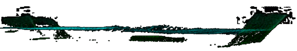
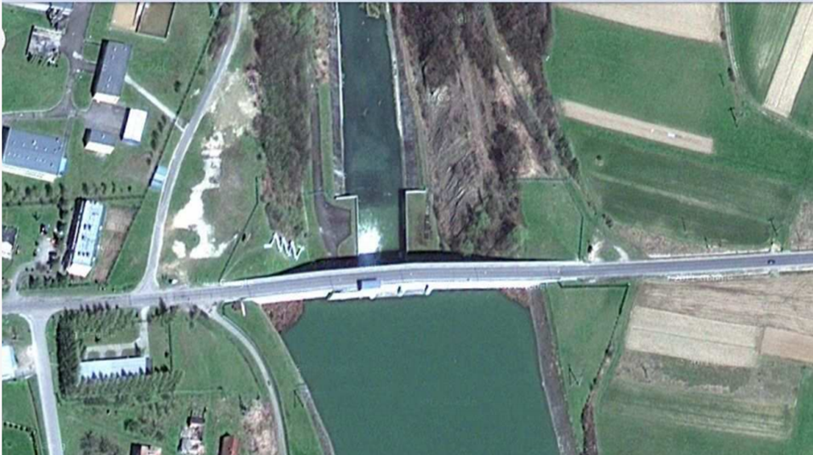

Мавзу: Trimble TX5 ва TX8 лазерли сканерида сёмка қилиш
Reja.
1. Lazerli skanerlar va ularda gidrotexnika inshootlarini syomka qilish
2. Gidrotexnika inshootlarini texnik ko`zdan kechirishda lazerli skanerlash
3. Yer usti skanerlash ishlarini bajarish
Lazerli skanerlash 3D o`lchash ishlari texnologiyasini qayta aniqlaydi. Vaqt va shaxsiy
talablar qisqargan, yig`ilgan ma`lumotlar miqdori ancha yuqori. Skanerlashning kalit
elementi “bir marta o`lchab, ko`p foydalanish” dir, bu ko`p o`lchash ishlari to`plamini
ta`minlaydi. Buning samarali tomoni foydali axborotga kirish ma`lumotlarini kamaytirishni
talab etadi. Buning o`zi to`liq alohida tadqiqotga olib boradi-lekin ma`lumotlarga ishlov
berish uchun talab qilinadigan vaqt kamida 10 martalik dala ish vaqti bo`lishi ta`kidlanadi.
So`nggi paytlarda bu vaqt foydalanuvchi ekspertizasi va ko`plab dasturiy ta`minotlar evaziga
qisqartirilgan lekin shuningdek zarur bo`lmagan ma`lumotlar to`plashini minimallashtirish
uchun dala-ishlari o`tkazilmoqda.
TX8 skanerlarning TX5 skanerlaridan afzalligining kalitlaridan biri obyektlarini tanlab
olish va “hamma narsani skanerlash” orqali skanerlay olishidir, bu bir xil vaqtni talab
qiladi, lekin bu ma`lumot sizga zaruriy ma`lumot ekanligini tekshiradi.
Sizga kerak bo`lgan nuqsonlardan ko`proq nuqtalarni yuqori aniqlikda o`lchash
imkoniyati mavjud bo`lishi bilan bir qatorda (4 mm masofa aniqligiga yaqinlashib va bitta
nuqta uchun 6 burchakli aniqlik) skanerlar bilan o`lchangan paytda ba`zi tushunarli
masalalar mavjud.
Ma`lum joylashuvda bevosita o`lchash ishlarini olib boorish va kutilgan dizayn o`lchash
ga qarshi o`lchash ishlari ma`lumotlarini lazer skanerlashi bilan qiyoslash mumkin.
Modellashtirligan shaffof suvli kanaldagi eng muhim elementlar suvning chuqurligi va
shuningdek to`lqinning balandligidir.
Rasm, kursdagi suv havzalaridan biri orqali o`tadigan uzun kanal bo`lishini va to`lqin
shaklini ko`rsatadi. To`lqinlar uchun eng balanddagi pastgacha o`lchash to`lqinlar uchun
dizayn o`lchash ishlari moslashtiriladi, bunda ma`lumotlarham Point cloud tahlillari va
shaffof suv ta`rifini bilishini talab etadi. Rasmdagi o`ng taraf tushish joyi 50 mm.lik
o`lchashdagi eng yuqori belgiga birlashtiriladi. Bu to`lqin uchun real-masshtabdagi
balandlik dizayni 0,5 m bo`lishi ma`lum, shuning uchun bu bosqichda natijalar o`lchash
texnikasi kutilgan natijalarni berishi kerak deb hisoblaydi.
3D Point cloud bilan ishlashning ustunliklari quyidagi rasmlarda ko`rsatilgan. To`lqin
shakllari qanday qilib yasalishini tushuntirsh juda oson va turli xil nuqtalardan ularning
shakllarini ko`rish mumkin. Rasmda bevosita yuqoridagi oqimni ko`rinishini ko`rsatadi.

Tekshirish fazasida kursni tekshiruvchilar original dizayndagi oqimga urg`u berishadi, bu
real dunyo masshtabida qurilgan muommolarni keltirib chiqaradi. O`lchash ishlari yon
tomondan olinadi, lekin chiqarib olingan 3D modeli o`zgarishning eng yahshi yozuvlarini
isbotlaydi. Talab etilgan 4 minutlik skanerlash vaqti quyidagi rasmda ko`rsatilgani kabi
asosiy kurs shaklini ko`rsatish uchun adekvat ma`lumotlarni yig`adi.
Ma`lumotlarni ko`rsatishning eng samarali yo`li Point clouddan yuza qismni yaratish
bo`ldi. Rasmda kanalning bir qismini ko`rsatib, u uchburchak qilingan lekin
o`zgartirilmagan.
Rasmda o`zgartirilgan suv yuza qismiga ega kanalning bir qismini va suv shaklini bo`rttirib
ko`rsatish uchun ko`p bo`limlar bo`lingan qismni ko`rsatadi. Kanalning markaziy qismi kanal
xususiyatlari tufayli yuzaga kelgan to`lqinlarni aniq ko`rsatadi.
Kundan-kunga rivojlanib borayotgan yer usti lazerli skanerlash texnologiyasi zamonaviy
tipdagi lazerli skanerni taklif qilmoqda. Ushbu zamonaviy geodezik qurilmadan foydalanib,
geodezik monitoring qilish orqali bajariladigan beton to`g`onlari davriy nazorat qilishni
tadqiq qilish deyarli davomiy nuqtali modellarga ega bo`lish imkoniyatini beradi. Ushbu
tadqiqotlarning natijalariga asoslanib, bir qator geometrik tahlillarni bajarish mumkin,
jumladan batafsil analitik va hisoblash muhokamalari uchun foydali bo`lgan axborotga ega
bo`lish mumkin.
Skanerlash taxeometrga o`xshab, masofa va burchaklarni aniqlashtirib, tadqiq
qilinayotgan nuqtalarning kenglik koordinatalarini (x, y, z) o`lchaydi. Skaner tomonidan
chiqarilgan, aks ettirilgan lazer nurlarining jadallik qiymatini qayd etish koordinatalar
tizimi deb atalib, tadqiq qilinayotgan obyekt haqidagi yangi axborotni tashlaydi. Skanerda
bajarilgan tadqiqotlarning aniqligini hisoblash tadqiqot kuzatuvchilari darajasi bilan bir
xildir. Operatsiyalarni bajarishning yuqori tezligi va olinadigan ma`lumotlarning hajmi
kattaligi tufayli, skanerlar geodezistlarning ishida foydali asbob bo`lib qoldi.
Mazkur ish bajarilgan tajriba tadqiqotlariga asoslanib, beton suv to`g`onlari
konstruktsiyasini belgilangan nuqtadan deformatsiyasi va yuza qismlari shaklini o`zgarishini
o`rganish uchun yer usti lazerli skanerlashdan foydalanish imkoniyatlarini baholashni taqdim
etadi, o`tkazilgan tajriba tadqiqotlari:
-turli xil yuklama ostidagi tuzilmalarning holatlari geometric modellarning
ma`lumotlarini yaratish va yangilash uchun skanerlashdan olingan ma`lumotlardan foydalanish,
-yer usti lazerli skanerlash texnologiyalaridan foydalanib, suv rezervuarlaridagi va
turli xil geometrik tuzilmalaridagi suv darajasi xilma-xilligi o`rtasidagi munosabatlarni
paydo bo`lishini o`rganishni o`z ichiga oladi.
Gidravlik muhandislik havfsizligini baholashda turli xil o`lchash metodlari, hisoblash
muhandisligi va turli xil sohalardagi mutaxassislarning tajribalarini jamlash zarur.
O`lchash modellerini rivojlantirish qurilish muhandisligidagi o`zgarishlarni yanada aniqroq
monitoring qilish, jumladan, umumiy xatoliklarni minimalga yetkazish va o`lcham narxlari
vaqtini kamaytirish imkoniyatlarini kengaytirishni ta`minlaydi. Natijada, bu gidravlik
muhandislarning texnik holatini va havfsizligini ishonchliroq baholashni ta`minlaydi.
O`lchash integratsiyasi, obyekt harakatini baholash uchun raqamli modellshtirishni kiritish
va sifat jihatidan farq qiladigan ma`lumotlarga ega texnik holati baholash ishlari
obyektlarni hamma taraflama baholash va shu asnoda to`liq tarzda baholash imkoniyatini
beradi va ochiq oydin hamda tushunarli manzarani beradi.

Besko to`g`onining joylashishi va ko`rinishi
Tekshirilgan obyektning joylashuvi va tavsifi.
-joylashuvi: Jenevadagi Vislon daryosi 172.8 km. da (Polsha).
-To`g`on 1978 yilda foydalanishga topshirilgan.
-Uzunligi: 174 m.
-Maksimum balandligi: 38.2 m.
-Qurish uchun ishlatilgan beton hajmi: 70000 m3 atrofida.
-14 ta mustaqil, kengaytirilga-qo`shma beton bo`linmalar: 12 m uzunlikdagi bo`linmalar.
15 m uzunlikdagi suv oqib chiqadigan 2 ta bo`linmalar.
-Yuza qismidagi suv oqib chiqadigan Kriger rusumli 2 ta suv oqib chiqadigan 11.20
maksimum 2.60 m bo`linmalarning qopqoqlari bilan yopilgan, balandligi 2.60 va gidravlik
privod bilan nazorat qilinadi.
Odatda to`g`on joylashuvi bilan bog`liq bo`ladigan joy murakkabligi muhandislik
asbob-uskunalari va muhim geodezik o`lcham metodlarini tanlashni belgilaydi. Davriy nazorat
tadqiqotlarini amalga oshirishda foydalaniladigan tadqiq qilish instrumentlari
natijalarining yuqori darajada aniqligi va ochiq oydinligi bilan tavsiflanishi lozim.
Zamonaviy o`lchash asbob-uskunalarining yana bitta ustunligi eng qisqa muddatlarda va oddiy
operatsiyalar bilan katta miqdordagi kuzatishlarni bajara olish, shu asnoda o`lchanadigan
birliklar o`lchamini kamaytira olish imkoniyatidir. Suv muhitining yaqinligi mahalliy
iqlimiy mikro-sharoitni tug`dirib bu kutilgan aniqlikdagi kuzatishlarni bajarish uchun doim
ham qulay bo`lavermaydi. Bu kutilgan yuqori darajadagi talablarga javob bera oladigan
geodezik o`lchash instrumentlari (kuzatilgan nuqtalarning yuqori darajada zichligi,
aniqligi, tezlik, tejamkorlik) yer usti lazerli skanerlar ekanligiga shubha yo`qdir. Bu
intilishlardan foydalanish monitoring qilinayotgan to`g`onlarning deyarli davomiy nuqtali
modellarni yaratish imkoniyatini beradi. Bunday modellar asosida bir qator geometrik
tahlillarni bajarish mumkin va batafsil ma`lumotlarga ega bo`lishi mumkin.
Skaner taxeometr kabi masofa va burchaklarni aniqlashtirib, o`lchanayotgan nuqtalarning
kenglik koordinatalarini (x, y, z) belgilaydi. Lazer nurlarining aks etish jadalliga
qiymatlari skaner tomonidan yozib olinib, bu “koordinatalar tizimi” deb ataladi va bu
komponentdagi mavjud ma`lumotlar o`lchangan obyekt haqida qo`shimcha ma`lumotlar beradi
(skanerlangan materiallarning turlarini ajratish imkoniyati, konstruksiyadagi suv oqish
joyini ko`rsatish, foydalanuvchi tomonidan aniqlashtirligan o`ziga xos aks etishda
skanerlangan obyekt haqida ma`lumot yi`g`ish va boshqalar).
Skanerlar faza va pul`sga bo`linishi mumkin. Bu bo`linish o`lchash doirasi bilan
yaqindan bog`liqdir: pul`s skanerlari o`lchanayotgan nuqtadan uzoqda joylashgan obyektlarni
(hattoki bir nech kilometrgacha) o`lchash imkoniyatiga ega ekanligiga qaramasdan, faza
yechimlari yaqin masofalar uchun (200 m. gacha) nazarda tutiladi. O`lchangan masofaga
bog`liq ravishda skanerlar: qisqa, o`rtacha va uzoq doiralarga farqlanadi. Bu yana boshqa
tavsifni, ya`ni o`lchash aniqligi nazarda tutadi. Bu qiymatlar masofasidagi o`lchashlarni
amalga oshirish metodikasiga (fazoviy yoki pul`sli) va instrumentlarning rusumi va modeliga
bog`liq bo`lib, ular bir millemetrlardan bir necha santimetrlargacha bo`lgan qatordadir.
Bunda bir qator “standart” omillar qolib, ular: ob-havo sharoitlari bitta skanerlashning
bog`liq nuqtalarini aniqlashdagi aniqlik, tashqi koordinatalar tizimlariga bog`liqlik
aniqligini va boshqalarni o`z ichiga oladigan natijalarining yakuniy darajasi hamda
aniqligiga juda katta ta`sir ko`rsatadi.
Skanerlashning asosiy ustunligi obyektning yuza qismini o`lchash ishlari bilan shubhasiz
qamrab olishidir-to`g`ondagi barqaror ozgina yoki bir nechta nuqtalar guruhi emas,
millionlab nuqtalar o`lchanadi. U quyidagilarni o`z ichiga olgan, kuzatishlardan amalda
foydalanishning ko`plab imkoniyatlarini beradi:
-obyekt reestri-amalga oshirishning turli xil bosqichlarida (loyiha bilan bajarilgan
elementlarni qiyoslash), qurish reestri, ta`mirlashdan, operatsiyani bajarish mobaynidagi
davriy o`lchashlardan keying ro`yhatga olish,
-turli xil yuklamalarning ta`siri ostidagi gidravlik obyektlarining xarakatini
modellashtirish uchun geometrik ma`lumotlarni yaratish va yangilash (raqamli
modellashtirish),
-suv havzasidagi sv sathini o`zgarishi va tuzilmalarning geometriyasini o`zgarishi
o`rtasidagi munosabatlarni paydo bo`lishini nazorat qilish.
-obyektning texnik holatini baholash.
Shimoliy tarafidan to`g`onni skanerlash natijalari
To`g`onning tashqi yuza qismi modeli
Obyektning gorizontal bo`linmalari (to`g`onning eng ustidagi ko`prik plitasi ostidagi suvni
toshib olib chiqishi tepasida), lazerli skanerlash bilan olingan
Besko to`g`onining o`lchash ishlari natijalari-suv oqib chiqish xuududidagi to`g`on modeli
Besko to`g`oni bo`linmalarining raqamli modeli
Element geometriyasini tahlili-ustun.
a) ustunli model skanerlash natijalariga asoslanib yasaladi.
b) silindrdagi ustunning muvofiq keluvchi modeli-qiyoslanadigan yuza qismlar
o`rtasidagi farqlarni vizualizatsiyasi
To`g`on elementlarini tahlil qilish
To`g`on elementlarini tahlil qilish-yuza qismini qiyoslash